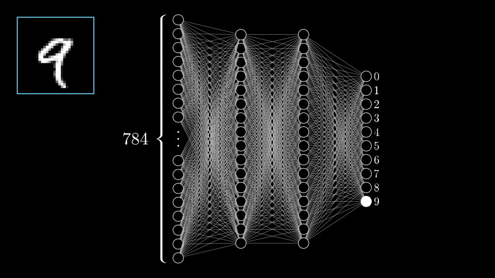

A construção dos modelos de IA generativa
Nesta palestra para a Liga Acadêmica da Faculdade de Direito de Alagoas, eu discuto como se deu a criação dos populares modelos de IA generativa e as problemáticas por trás deles.
Quem sou eu?
- Lucas Fialho Zawacki
- Líder técnico na Mconf
- Militante do coletivo Soberana
- Host do canal Tecnologia e Classe
- Formado pela UFRGS em Ciência da Computação
Um brevíssimo panorama da pesquisa em IA:
1. O que é um computador?
- Eu gosto de pensar numa calculadora glorificada e muito rápida
- Por meio de inputs/outputs podemos representar/interpretar uma diversidade de problemas como números
- O que é computável? Muita gente tentou responder, e é difícil
2. O que é inteligência artifical?
-
Definir "inteligência" sempre foi algo muito difícil, então geralmente temos algumas maneiras de entender:
- Humanos são o parâmetro: Assumimos que humanos possuem inteligência e algo que exibe comportamento humano seria inteligente. Teste de Turing
- Modelo de ser racional, simbólico: Assumimos que um ser racional com um conjunto de informações terá um determinado comportamento "correto". Nesse caso um ser inteligente age de uma maneira "racional"
-
O campo da inteligência artificial começa a se desenvolver na década de 1950 e um evento pivotal é a Dartmouth Conference, onde se cunha o termo.
-
O modelo simbólico se mostrou muito promissor nos primeiros anos, mas a explosão combinatória de proposições lógicas e a necessidade de muitos dados de alta qualidade (expert data systems) e contradições e nuances nesses dados deixou o campo empacado em meados de 1980
IAs generativas
-
Durante os anos 2000 começa a se popularizar o uso das técnicas de Machine Learning para a construção de inteligência artificial. O nosso algoritmo tem um estado inicial e um estado final desejado e deve calcular esse "caminho" sem uma receita pré-estabelecida
- Deepmind, comprada pela Google começa a usar o Reinforcement Learning para jogar diversos melhor que humanos.
- Esse tipo de aprendizado geralmente é implementado com o uso de Redes Neurais

- Dados são usados para criar essas redes, porém não lógica ou simbólicamente, mas baseado na probablidade
- Um modelo baseado nesse tipo de dados e redes de conexões pode ser usado para prever o comportamente de dados inexistentes na rede
-
Por meio de muita matemática e processamento a gente consegue aplicar esse processo a palavras e começam a aparecer os primeiros modelos 'preditivos de texto'.
- Cadeias de Markov
- "Dada uma palavra qual é a próxima?"
- "Dada uma lista de palavras qual é a próxima?"
- e etc...

- Em 2017 pesquisadores da Google publicam o artigo "Attention Is All You Need". Esse trabalho é crucial para a criação dos modelos GPT
- Antes modelos lidavam com a geração de cadeias de palavras uma a uma, agora elas podem lidar com a frase inteira de uma vez só enfatizando e sentidos entre elas

- Esse tipo de lógica pode ser usado para construir outros tipos de modelos, como por exemplo para geração de imagens que usam o que chamamos de 'modelos de difusão'

- Esse tipo de técnica tem sido a mais popularmente usada para criar modelos generativos de todo tipo de conteúdo: texto, áudio, imagens, vídeos e etc...
- O aspecto mais importante do tipo de saídas geradas por esses modelos é que elas parecem 'geradas por humanos' ou 'naturais' ou 'convincentes' o suficiente e por isso hoje modelos de IA generativos são o martelo da área... e absolutamente tudo é um prego
O modelo de negócio das empresas de IA
-
Em 2015 a OpenAI começa como uma organização sem fins lucrativos. Seu foco principal era promover a pesquisa aberta em IA, com a ideia de compartilhar descobertas para beneficiar a humanidade.
- Porém em 2019 eles criaram uma estrutura mista de financiamento privado com "capped-profits" para atrair um maior número de investimentos
-
Em 2022 o ChatGPT é lançado e em 5 dias alcança 1 milhão de usuários e em 2 meses 100 milhões.
- Grande disponibilidade de dados. Decorrência do que Shoshana Zuboff chama de capitalismo de vigilância
- Avanços científicos e tecnológicos
- Disponibilidade de hardware (GPUs)
- Investimento de big techs e bilionários
-
Porém além dos dados e do processamento necessário para codificar as relações entre eles em uma rede neural, é preciso algumas coisas mais, feitas com muito trabalho humano:
- Correção, catalogação e etiquetação dos dados
- Avaliação e alinhamento dos resultados

- Quando a Amazon foi fundada o modelo deles era a catalogação e a digitalização de dados de milhões de livros, que muitas vezes estavam incorretos. A solução foi a terceirazação desse trabalho para milhares de pessoas. Isso eventualmente se tornou a plataforma 'Mechanical Turk' e diversas outras
- Todas essas plataformas foram instrumentais para a organização do trabalho na IA
- Geralmente trabalho intermitente, 'gig work', mal remunerado e feito em países do sul global
- Scale AI, Appen, Microsoft, Google, Amazon, Palantir
- Muitas vezes os dados/processos que geramos/efetivamos como usuários/trabalhadores dentro das plataformas também são usados como parte desse processo
- Hoje a base para a maior parte dos 'assistentes de IA' são esses modelos generativos. Eles estão 'auto completando' uma conversa em que eles ajudam alguém.
- A adição de pré prompts, memória de conversas passadas, outros modelos (modelos multimodais) e ferramentas (acesso a internet, documentos, gráficos, outros programas, ...) cria um comportamento emergente que acaba por ser muito mais do que simplesmente um 'papagaio estatístico'
Mas que dados estão lá mesmo?
- O que nós sabemos é que esses modelos de IA treinaram em:
- Todo texto da internet pública
- Todos livros em domínio publico
- Livros vendidos comercialmente (?)
- Jornais e revistas (?)
- Programas de TV, vídeos no YouTube (?)
Os datasets books3 e outras piratarias:
https://www.wired.com/story/battle-over-books3/
O caso do LAION-5B
O processo da NYT X OpenAI
- O cerne do processo é dividido em 2 partes:
- A OpenAI não tem permissão legal para usar os textos do New York Times para construção do seu modelo
- O modelo é capaz de gerar trechos ou até artigos inteiros verbatim do que está presente no NYT (regurgitação)
- Nesse tipo de processo o que geralmente é invocado como defesa é a doutrina do 'fair use':
- É usado apenas uma parte do conteúdo e não todo ele
- É um trabalho transformativo e que não substitui o original
- Se perguntarem pra mim as empresas de IA estão prontas pra ignorar essa questão ad infinitum
- A maioria das editoras parecem ter em mente uma espécie de taxa ou trato para licensiamento do conteúdo
Sobre IA e trabalho
- Repetidas vezes a ênfase nos problemas éticos da IA é posta no 'roubo' de dados
- É possível pensar também no 'roubo' de incontáveis horas de trabalho que foi usada para criar estes modelos
- A IA, como a automação do trabalho, cria uma dinâmica no nosso mercado de trabalho que tende à precarização do trabalho
- "Mercado de Trabalho"
- Mais trabalho, feito por menos pessoas
- Menos trabalhadores são necessários, custo do trabalho desce
- O custo do trabalho é o seu salário
- As ferramentas modificam nosso trabalho, deslocam o foco para outras esferas... o que a IA faz com a sua profissão?
- É possível fazer o seu trabalho hoje sem depender dessas ferramentas?
- É desejável? (por seu chefe?)
- É apenas questão de se adaptar?
- Quem controla essas ferramentas?
Recomendação de vídeo?
Sugestões para debate
- Se você entendeu melhor como essas ferramentas funcinam, isso muda como você enxerga elas?
- Como você usa essas ferramentas no seu dia a dia?
- Como podemos pensar a legislação dessas ferramentas?Vocês acreditam que haverão empecilhos legais para o uso desses modelos no futuro?
- Por que essas ferramentas vem primariamente dos EUA, China e um pouquinho da Europa?
Referências
https://www.3blue1brown.com/topics/neural-networks
Lista não exaustiva de processos sobre IA generativa.
https://www.wired.com/story/ai-copyright-case-tracker/
📚 Textos e Livros
- Autores vs. OpenAI e Microsoft – 2023
- The New York Times vs. OpenAI e Microsoft – 2023
- Sarah Silverman vs. OpenAI e Meta – 2023
- The Intercept, Raw Story e AlterNet vs. OpenAI e Microsoft (DMCA) – 2024
🖼️ Imagens e Mídia
- Artistas vs. Stability AI, Midjourney e DeviantArt – 2023
- Getty Images vs. Stability AI – 2023
- Disney e Universal vs. Midjourney – 2025
🎙️ Voz e Direitos de Imagem
- Dubladores vs. Lovo Inc. – 2024
🔐 Segredos Comerciais e Marcas
- Perplexity Solved Solutions vs. Perplexity AI (marca) – 2025
- iyO Inc. vs. OpenAI, Jony Ive e ex-executivo – 2025
💻 Código e Software
- Desenvolvedores vs. GitHub Copilot (OpenAI & Microsoft) – 2022
🎵 Música e Produção Musical
- Gravadoras (RIAA) vs. Suno e Udio – 2024
- Editoras Musicais vs. Anthropic (Claude) – 2023
- Artistas Independentes vs. Suno e Udio (ação coletiva) – 2025